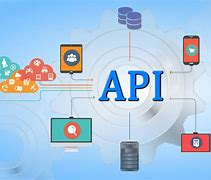
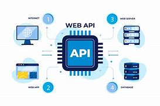
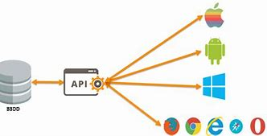
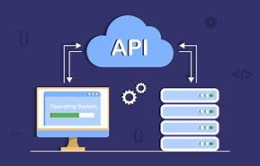

¿Qué es una Web API?
Una Web API (Application Programming Interface) es una interfaz que permite que diferentes
sistemas o aplicaciones se comuniquen entre sí a través de la web. Las Web APIs se basan en protocolos
estándar como HTTP y generalmente intercambian datos en formatos como JSON o XML.
Las APIs son fundamentales para el desarrollo de aplicaciones modernas, ya que permiten la integración
entre servicios, facilitando el acceso a datos y funcionalidades sin necesidad de que los desarrolladores
repliquen la lógica en cada aplicación.
Recomendaciones para desarrollar una Web API
- Definir los objetivos de la API
- Antes de empezar a desarrollar la API, es importante comprender el problema que resolverá y los usuarios a los que servirá.
- Se deben definir los casos de uso y la funcionalidad esperada.
- Seguir estándares y convenciones
- Utilizar principios de diseño como REST (Representational State Transfer).
- Definir una estructura clara para los endpoints (URLs).
- Utilizar formatos de intercambio de datos estandarizados como JSON o XML.
- Documentar la API
- Es importante que otros desarrolladores puedan entender cómo usar la API.
- Herramientas como Swagger, Postman o Redoc pueden ayudar a generar documentación automáticamente.
- Priorizar la seguridad
- Implementar autenticación y autorización (OAuth, JWT, API Keys).
- Usar HTTPS para cifrar la comunicación.
- Aplicar control de acceso y validaciones de datos para evitar vulnerabilidades.
- Versionar la API
- Para garantizar la compatibilidad a medida que la API evoluciona.
- Se puede incluir la versión en la URL (/api/v1/resource) o en los encabezados HTTP.

Proceso de Desarrollo de una Web API
- Requisitos funcionales: Qué funciones ofrecerá la API.
- Requisitos no funcionales: Seguridad, rendimiento, disponibilidad, etc.
- Casos de uso: Cómo interactuarán los usuarios con la API.
- Datos: Qué información manejará la API.
- Definir los objetivos y alcance del proyecto.
- Seleccionar la tecnología (Node.js con Express, Python con Flask o Django, etc.).
- Estimar costos y tiempos.
- Elegir la metodología de desarrollo (Scrum, Kanban, etc.).
Definir los endpoints: Cada endpoint es una URL a la que los clientes pueden enviar solicitudes.
Métodos HTTP:
GET- Obtener datosPOST- Enviar datosPUT- Actualizar datosDELETE- Eliminar datos
Para desarrollar una API, se utilizan diferentes tecnologías y frameworks, como:
- Node.js con Express.js (JavaScript)
- Django REST Framework o Flask (Python)
- Spring Boot (Java)
- ASP.NET Core (C#)
Ejemplo de implementación en Express.js:
const express = require('express');
const app = express();
app.use(express.json());
const posts = [{ id: 1, title: "Primer Post", content: "Contenido del post" }];
app.get('/posts', (req, res) => {
res.json(posts);
});
app.listen(3000, () => console.log("API corriendo en http://localhost:3000"));

- Pruebas unitarias (Jest, Mocha).
- Pruebas de integración (Postman, Newman).
- Pruebas de carga (JMeter).
Se recomienda usar Swagger (OpenAPI) o Postman para documentar la API.
Implementar la API en un servidor o en la nube:
- Heroku, AWS, Azure, Google Cloud
- Docker y Kubernetes para contenedorización
Se recomienda utilizar herramientas como Prometheus, Grafana, New Relic.
Registrar logs con Winston (Node.js) o Log4j (Java).
Si la API se venderá o compartirá con terceros, se puede publicar en marketplaces como:
- RapidAPI
- Postman API Network

Ejemplo de una API RESTful básica
Aquí tienes un ejemplo de cómo diseñar una API REST para un sistema de gestión de usuarios en Express.js:
const express = require('express');
const app = express();
app.use(express.json());
let users = [
{ id: 1, name: "Juan", email: "juan@example.com" },
{ id: 2, name: "Ana", email: "ana@example.com" }
];
// Obtener todos los usuarios
app.get('/users', (req, res) => {
res.json(users);
});
// Obtener un usuario por ID
app.get('/users/:id', (req, res) => {
const user = users.find(u => u.id === parseInt(req.params.id));
user ? res.json(user) : res.status(404).json({ message: "Usuario no encontrado" });
});
// Crear un nuevo usuario
app.post('/users', (req, res) => {
const newUser = { id: users.length + 1, ...req.body };
users.push(newUser);
res.status(201).json(newUser);
});
// Actualizar un usuario
app.put('/users/:id', (req, res) => {
const index = users.findIndex(u => u.id === parseInt(req.params.id));
if (index !== -1) {
users[index] = { id: parseInt(req.params.id), ...req.body };
res.json(users[index]);
} else {
res.status(404).json({ message: "Usuario no encontrado" });
}
});
// Eliminar un usuario
app.delete('/users/:id', (req, res) => {
users = users.filter(u => u.id !== parseInt(req.params.id));
res.json({ message: "Usuario eliminado" });
});
app.listen(3000, () => console.log("API ejecutándose en http://localhost:3000"));

Conclusión
El desarrollo de una Web API es un proceso fundamental en la creación de aplicaciones modernas,
permitiendo la comunicación eficiente entre diferentes sistemas. Desde el análisis de requerimientos
hasta el monitoreo y mantenimiento, cada fase del desarrollo es crucial para garantizar que la API
sea segura, eficiente y escalable.
Siguiendo buenas prácticas, como el uso de estándares REST o GraphQL, pruebas automatizadas y documentación
clara, se puede construir una API robusta que facilite la integración con otros servicios y aplicaciones.
Además, el despliegue en entornos adecuados y el monitoreo constante asegurarán su disponibilidad y
rendimiento óptimo.
En conclusión, una API bien diseñada no solo mejora la experiencia del usuario, sino que también optimiza
la interoperabilidad y el crecimiento del ecosistema digital en el que se implementa.
